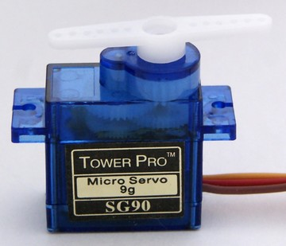
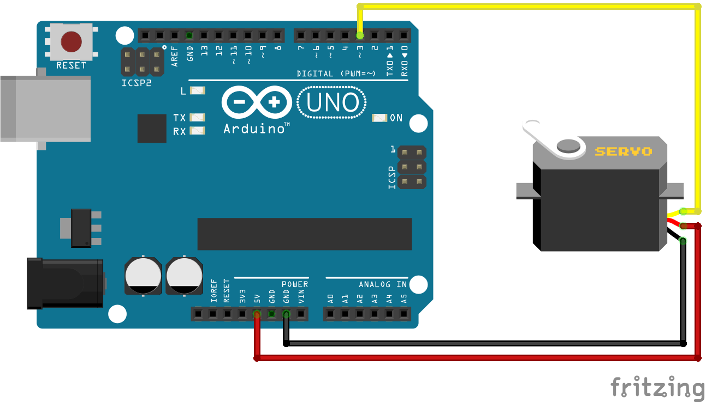
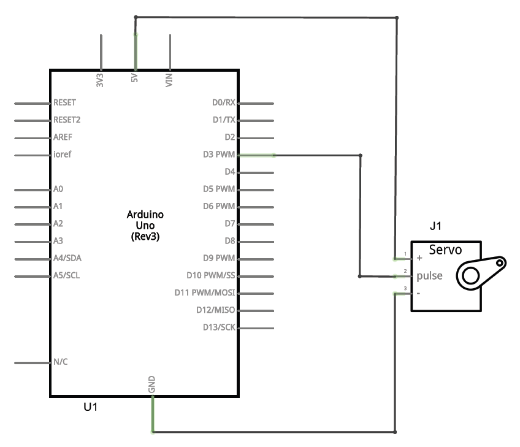
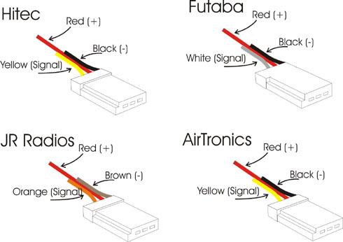

1. Servomotor¶
Un servomotor és un motor elèctric que pot recórrer a la posició angular desitjada i mantenir -se estable en aquesta posició.
{kind=link}

Un servomotor pot convertir un component mecànic o moure un element de lineal.
Les aplicacions típiques que utilitzen servomotors són:
- Vídeo: Gate of a Air Condicioning Panel
- Direcció de la direcció d’un vehicle cap al control de la ràdio.
- Moviment de capçalera de lectura d’un lector CDROM o DVD.
- Moviment de miralls retrovisor automàtic d’un cotxe.
- Obertura i tancament d’una caixa de seguretat amb pany electrònic.
Operació¶
Per moure un servomotor, cal connectar -se a una font d’alimentació elèctrica i enviar un senyal electrònic que indiqui la posició desitjada. La majoria dels servomotores de ràdio control tenen un cable de connexió de 3 guns on el corrent d'alimentació i el senyal de control circulen.
** Composició interna: **
Vídeo: Composició i funcionament intern d'un servomotor
Internament, el servomotor està format pels components següents.
- Motor elèctric.
- Reductor mecànic.
- Sensor de posició. Generalment és un potenciòmetre.
- Circuit de control.
El motor és l’element que produeix el moviment.
El gir dels motors elèctrics sol ser molt ràpid i amb poca força, el reductor mecànic aconsegueix reduir la velocitat de rotació i augmentar la força, de manera que el gir final sigui més útil.
El sensor de posició us permet conèixer la posició exacta de l’eix de gir del servomotor. Amb el sensor, la posició de l’eix es pot corregir de manera que en tot moment estigui en la posició desitjada.
El circuit de control rep el senyal de la posició desitjada pel cable i el compara amb la posició real de l’eix, mesurada pel sensor. Aquest circuit és responsable de moure el motor per agafar la posició desitjada a l’eix i mantenir -lo en aquesta posició. De vegades sembla que l’eix servomotor tremola. Això es deu al circuit de control que corregeix contínuament la posició amb girs a la dreta i a l’esquerra per mantenir la posició final estable.
Especificacions¶
Hi ha molts tipus de servomotors. A tall d’exemple, es mostren les especificacions d’un petit “Tower Pro 9G <../_ Static/Document/SG90Servo.pdf>`__ Servomotor.
- Tensió de potència = 4,8 a 6,0 V
- Corrent màxim = 570 a 730 mA
- Desplaçament de corrent sense càrrega = 170 a 270 mA
- Angle Giro = de 0 a 180º
- Gireu la força = 1,8 kg-cm a 4.8V
- Velocitat de gir = 180º a 0,36 s
- Pes = 9 grams
- Precisió = 10us = 1,8º
La majoria dels servomotores permeten girar angles inferiors a 180º. Al següent vídeo podeu veure el funcionament del servomotor, la seva velocitat de rotació i la seva gamma d’acció. En una imatge oscil·loscopi també podeu veure el senyal electrònic que controla el servomotor.
- Vídeo: Processador de servo RC.
Esquema de connexió¶
El següent esquema mostra com connectar un servomotor a la placa Arduino Uno.
{kind=link}

{kind=link}

Tingueu en compte que el sistema de colors i connexions HITEC s’ha utilitzat per realitzar aquest esquema. Altres servomotors tenen un esquema de colors diferent i fins i tot connexions en diferents ordres.
{kind=link}

Programa de control¶
La Biblioteca de Control Servomotor arriba de manera normal amb l’entorn Arduino. El seu nom és <servo.h>
En l'exemple següent, s'utilitza la llibreria Servo.
1 2 3 4 5 6 7 8 9 10 11 12 13 14 15 | // Programa de prueba para mover un servomotor a dos posiciones.
#include <Servo.h>
Servo myservo; // Crea un objeto de tipo servomotor llamado myservo
void setup() {
myservo.attach(3); // Conecta el servomotor al pin digital 3
}
void loop() {
myservo.write(0); // Mueve el servomotor a la posición de 0 grados
delay(500); // Espera medio segundo
myservo.write(180); // Mueve el servomotor a la posición de 180 grados
delay(500); // Espera medio segundo
}
|
Exercicis¶
Completa el següent programa que mou lentament el servomotor entre dues posicions diferents.
1 2 3 4 5 6 7 8 9 10 11 12 13 14 15 16 17 18 19 20 21 22 23 24 25 26 27
// Mueve el servomotor conectado al pin digital 3 // lentamente entre dos posiciones distintas #include <Servo.h> Servo myservo; // Crea un objeto de tipo servomotor llamado myservo void setup() { myservo.attach(3); // Conecta el servomotor al pin digital 3 } void loop() { // Mueve lentamente el servomotor desde 0 hasta 180 int angle = 0; while(angle < 180) { myservo.write(angle); // Mueve el servomotor a la posición 'angle' delay(20); // Espera 20 milisegundos angle = angle + 2; } // Mueve lentamente el servomotor desde 180 hasta 0 }
Feu una modificació al programa anterior perquè el servomotor es mogui lentament de la posició 0 graus a 180 graus. Un cop finalitzat aquest moviment, ha de tornar ràpidament a la posició de 0 graus. El moviment ràpid es pot aconseguir reduint el temps d’espera `` `` o augmentant l'angle de gir a l'Instrucció angle = angle + 2`.
Tingueu en compte que el servomotor triga aproximadament 360 mil·lisegons per tornar a la seva posició inicial. El temps previst per al moviment no ha de ser inferior.
Feu un programa que mogui un servomotor per situar -se 0 graus quan prémer el botó 1 i que mogui el servomotor per situar 90 graus en prémer el botó 2.
Extres¶
- Vídeo: Explicació en anglès del funcionament d'un servomotor <https://www.youtube-nocoakie.com/embed/hg3tifixwco>`__
- Vídeo: How Servo Motors i com controlar els servos mitjançant arduino